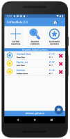
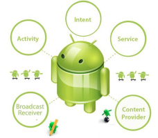

Assignments
Assignment-1
Assignment-2
Module Overview & Background
01: Module Overview
Overview & Tools
Overview & Tools
01: App Design
02: Android Anatomy
Lab-01
UI Design, Navigation & App Structure
UI Design & App Structure
03: UI Design - Part 1
04: UI Design - Part 2
Lab-02
Lab-03
UI Navigation
05: UI Navigation
Data Persistence in Android
05: Android & Shared Preferences
06: Android & SQLite
07: Android & Realm
Lab-05-a
Lab-05-b
Mobile App Development 2
All slides's in Module
Assignment-1

Assignment-2
01: Module Overview
01: App Design
02: Android Anatomy

03: UI Design - Part 1
04: UI Design - Part 2
05: UI Navigation
05: Android & Shared Preferences
06: Android & SQLite
07: Android & Realm